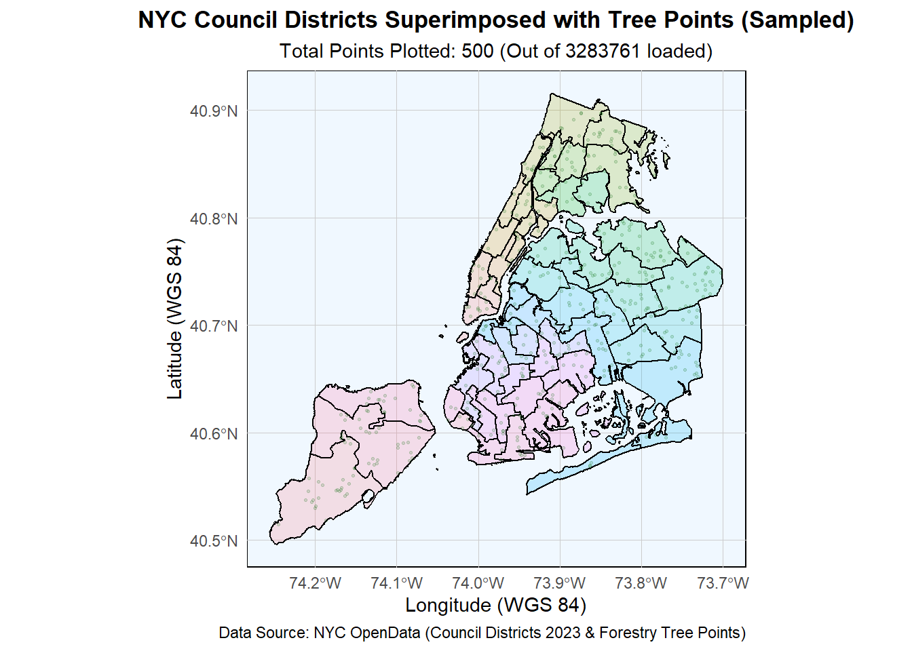
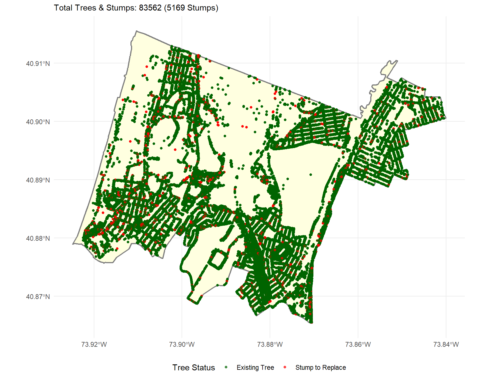

Visualizing and Maintaining the Green Canopy of NYC
Data Aquisition
Show the code
library(sf)library(dplyr)BASE_URL <-"https://data.cityofnewyork.us/api/geospatial/hn5i-inap?method=export&format=GeoJSON"DATA_DIR <-"data/mp03"PAGE_LIMIT <-5000# Set a responsible limit for each query#' @return An sf data frame containing all NYC Forestry Tree Points.download_and_combine_tree_points <-function() {# Ensure the data directory existsif (!dir.exists(DATA_DIR)) {dir.create(DATA_DIR, recursive =TRUE)message(paste("Created directory:", DATA_DIR)) } all_data_parts <-list() offset <-0 keep_paging <-TRUEmessage("Starting download and read process...")while (keep_paging) {# 1. Define file paths and API URLs for the current page file_name <-paste0("trees_page_", offset, ".geojson") local_file_path <-file.path(DATA_DIR, file_name)# Construct the API URL with limit and offset parameters api_url <-paste0(BASE_URL, "&$limit=", PAGE_LIMIT, "&$offset=", offset)# 2. Check if the file is already downloaded if (file.exists(local_file_path)) {message(paste("File exists for offset", offset, ". Reading local file...")) } else {# 3. Download the file if it does not existmessage(paste("Downloading data for offset", offset, "..."))tryCatch({download.file(api_url, destfile = local_file_path, mode ="wb", quiet =TRUE) }, error =function(e) {warning(paste("Error downloading data for offset", offset, ":", e$message)) keep_paging <<-FALSEreturn() }) }# 4. Read the downloaded/local GeoJSON file current_page_data <-tryCatch({st_read(local_file_path, quiet =TRUE) }, error =function(e) {warning(paste("Error reading local GeoJSON file for offset", offset, ":", e$message))# If reading fails, it indicates the end or corruption. Stop paging. keep_paging <<-FALSEreturn(NULL) })# Check if data was read successfullyif (!is.null(current_page_data)) { num_rows <-nrow(current_page_data)# Add the current page's data to the list all_data_parts[[as.character(offset)]] <- current_page_datamessage(paste("Successfully read", num_rows, "rows."))# 5. Check for end of data set# If the number of rows is less than the limit, we have reached the end.if (num_rows < PAGE_LIMIT) {message("End of dataset reached.") keep_paging <-FALSE } else {# Increment offset for the next page offset <- offset + PAGE_LIMIT } } else {# This catch block is for when st_read fails (e.g., file corrupted or empty response) keep_paging <-FALSE } }# 6. Combine all data sets using bind_rows from dplyrif (length(all_data_parts) >0) {message("Combining all data parts...") final_tree_data <-bind_rows(all_data_parts)message(paste("Download and combination complete. Total trees:", nrow(final_tree_data)))return(final_tree_data) } else {message("No data was downloaded or read.")return(NULL) }}#tree_points <- download_and_combine_tree_points()#print(tree_points)
Show the code
# Load necessary librarieslibrary(sf)library(dplyr)library(ggplot2)# --- DATA SETUP ---if (!exists("council_districts_wgs84") ||!inherits(council_districts_wgs84, "sf")) {stop("Error: The 'council_districts_wgs84' object is missing or not an sf object. Please ensure you have run the code to load and transform the NYC Council district boundaries.")}message("Attempting to load/download actual tree points data...")if (exists("download_and_combine_tree_points")) {# This function will read existing files (like trees_page_0.geojson) and download any missing pages. tree_points <-download_and_combine_tree_points()} else {# If the function is not defined, we stop and tell the userstop("Error: The 'download_and_combine_tree_points' function is not defined. Please ensure 'tree_data_downloader.R' has been sourced/run.")}MAX_PLOT_POINTS <-500original_tree_count <-nrow(tree_points)if (original_tree_count > MAX_PLOT_POINTS) {message(paste0("NOTE: Downsampling tree points for visualization. Using a random sample of ", MAX_PLOT_POINTS, " points to prevent a fatal memory error."))# Sample the tree points data for plotting efficiency tree_points_plot <- tree_points %>%slice_sample(n = MAX_PLOT_POINTS) plot_count <-nrow(tree_points_plot)} else { tree_points_plot <- tree_points plot_count <- original_tree_count}# Create the map layersnyc_tree_map <-ggplot() +# Layer 1: Council District Boundaries (Polygons)# Corrected column name to CounDistgeom_sf(data = council_districts_wgs84, aes(fill =factor(CounDist)), # Corrected column name to CounDistcolor ="black", # Color of the district boundary lineslinewidth =0.5, # Thickness of the boundary linesalpha =0.2# Make the fill semi-transparent ) +# Layer 2: Tree Points (using the sampled data)geom_sf(data = tree_points_plot, # Use the sampled/limited datacolor ="darkgreen", # Color for the tree pointssize =0.5, # Very small point size for high densityalpha =0.15# High transparency (low alpha) to show density better ) +# Customization and theminglabs(title ="NYC Council Districts Superimposed with Tree Points (Sampled)",subtitle =paste0("Total Points Plotted: ", plot_count, " (Out of ", original_tree_count, " loaded)"),caption ="Data Source: NYC OpenData (Council Districts 2023 & Forestry Tree Points)",x ="Longitude (WGS 84)",y ="Latitude (WGS 84)" ) +# Use a minimal themetheme_minimal() +# Further theme adjustments for a clean map looktheme(legend.position ="none", # Remove the district fill legend as it's not the focusplot.title =element_text(hjust =0.5, face ="bold"),plot.subtitle =element_text(hjust =0.5),panel.grid.major =element_line(color ="gray80", linewidth =0.1), # Light grid linespanel.background =element_rect(fill ="aliceblue") # Light background color for the ocean/water )# Print the mapprint(nyc_tree_map)

District-Level Analyses of Trees
Show the code
# Load necessary librarieslibrary(sf)library(dplyr)if (!exists("council_districts_wgs84") ||!exists("tree_points")) {stop("Error: Missing required spatial objects. Please ensure 'council_districts_wgs84' and 'tree_points' are loaded in your R session.")}# Define the helper function for creating a single WGS84 point objectnew_st_point <-function(lat, lon, ...){# st_sfc expects x, y which flips the normal lat (N/S) + lon (W/E) orderingst_sfc(point =st_point(c(lon, lat))) |>st_set_crs("WGS84")}message("Performing spatial join (st_join: trees to districts)...")tree_points_joined <-st_join( tree_points, council_districts_wgs84, join = st_intersects) %>%# Ensure Shape_Area is kept for density calculation, only dropping Shape_Lengselect(-Shape_Leng) message(paste("Join complete. Total trees:", nrow(tree_points_joined)))tree_points_borough <- tree_points_joined %>%mutate(Borough =case_when( CounDist >=1& CounDist <=10~"Manhattan", CounDist >=11& CounDist <=18~"Bronx", CounDist >=19& CounDist <=32~"Queens", CounDist >=33& CounDist <=48~"Brooklyn", CounDist >=49& CounDist <=51~"Staten Island",TRUE~"Unknown"# Handle any potential data errors ))REQUIRED_STRUCTURE_COL <-"tpstructure"REQUIRED_SPECIES_COL <-"genusspecies"# Aggregate data by district to calculate counts and dead tree fractiondistrict_summary <- tree_points_borough %>%st_drop_geometry() %>%group_by(CounDist, Shape_Area) %>%summarise(Total_Trees =n(),# Using 'tpstructure' column and counting 'Stump' as the proxy for dead/removed treeDead_Trees =sum(.data[[REQUIRED_STRUCTURE_COL]] =="Stump", na.rm =TRUE), .groups ='drop' ) %>%# Add calculated metricsmutate(Tree_Density = Total_Trees / Shape_Area, # Trees per square meter (Shape_Area is in m^2)Fraction_Dead = Dead_Trees / Total_Trees ) %>%# Filter out districts with 0 trees (if any)filter(Total_Trees >0)# --- 4. ANSWER QUESTIONS ---message("\n--- District-Level Analysis Results ---\n")# A. Which council district has the most trees?most_trees <- district_summary %>%arrange(desc(Total_Trees)) %>%head(1)cat("A. District with the most trees:", most_trees$CounDist, "(", most_trees$Total_Trees, "trees)\n")
A. District with the most trees: 51 ( 212895 trees)
Show the code
# B. Which council district has the highest density of trees?highest_density <- district_summary %>%arrange(desc(Tree_Density)) %>%head(1)cat("B. District with the highest density of trees:", highest_density$CounDist, "(", highest_density$Tree_Density, "trees/m²)\n")
B. District with the highest density of trees: 7 ( 0.0008506484 trees/m²)
Show the code
# C. Which district has highest fraction of dead trees out of all trees?highest_dead_fraction <- district_summary %>%arrange(desc(Fraction_Dead)) %>%head(1)cat("C. District with the highest fraction of dead trees:", highest_dead_fraction$CounDist, "(", round(highest_dead_fraction$Fraction_Dead *100, 2), "% dead)\n")
C. District with the highest fraction of dead trees: 11 ( 6.19 % dead)
Show the code
# D. What is the most common tree species in Manhattan?most_common_manhattan <- tree_points_borough %>%filter(Borough =="Manhattan") %>%st_drop_geometry() %>%group_by(.data[[REQUIRED_SPECIES_COL]]) %>%summarise(Count =n()) %>%arrange(desc(Count)) %>%head(1)# Use .data[[REQUIRED_SPECIES_COL]] to access the grouped column for printingcat("D. Most common tree species in Manhattan:", most_common_manhattan[[REQUIRED_SPECIES_COL]], "(", most_common_manhattan$Count, "trees)\n")
D. Most common tree species in Manhattan: Gleditsia triacanthos var. inermis - Thornless honeylocust ( 51930 trees)
Show the code
# E. What is the species of the tree closest to Baruch’s campus?# Coordinates for Baruch College, NYC (approx 40.7402° N, 73.9856° W)baruch_point <-new_st_point(lat =40.7402, lon =-73.9856)closest_tree_species <- tree_points_joined %>%# Calculate distance from every tree to the Baruch point# Note: st_distance outputs a matrix, we use [1] to get the scalar valuemutate(distance_m =st_distance(geometry, baruch_point)[, 1]) %>%st_drop_geometry() %>%# Find the row with the minimum distancearrange(distance_m) %>%head(1)# Report the resultcat("E. Species closest to Baruch's campus (40.7402, -73.9856):", closest_tree_species[[REQUIRED_SPECIES_COL]], "(", round(closest_tree_species$distance_m, 2), "meters)\n")
E. Species closest to Baruch's campus (40.7402, -73.9856): Zelkova serrata - Japanese zelkova ( 37.66 meters)
Show the code
# Load necessary libraries (assuming they are installed)library(sf)library(dplyr)library(ggplot2)library(knitr)library(scales) # For percent formatting# Ensure necessary data objects exist (created by district_analysis.R)if (!exists("district_summary") ||!exists("tree_points_borough") ||!exists("council_districts_wgs84")) {stop("Error: Missing required data objects. Please run 'district_analysis.R' first.")}# --- PROJECT CONSTANTS & DATA DEFINITIONS ---TARGET_DISTRICT <-11COMPARISON_DISTRICTS <-c(1, 32, 49) REQUIRED_STRUCTURE_COL <-"tpstructure"# Filter for the target district's datad11_trees_sf <- tree_points_borough %>%filter(CounDist == TARGET_DISTRICT)# --- QUANTITATIVE SCOPE & METRICS ---# Get the number of stumps in District 11d11_stumps <- d11_trees_sf %>%st_drop_geometry() %>%filter(.data[[REQUIRED_STRUCTURE_COL]] =="Stump") %>%nrow()SCOPE_STUMPS <- d11_stumpsSCOPE_NEW_TREES <-200TOTAL_PROJECT_TREES <- SCOPE_STUMPS + SCOPE_NEW_TREES# --- COMPARISON DATA SETUP ---comparison_data_raw <- district_summary %>%filter(CounDist %in%c(TARGET_DISTRICT, COMPARISON_DISTRICTS)) %>%# Add Borough for better labelingmutate(Borough =case_when( CounDist %in%1:10~"Manhattan", CounDist %in%11:18~"Bronx", CounDist %in%19:32~"Queens", CounDist %in%49:51~"Staten Island",TRUE~"" )) %>%mutate(District_Label =paste0("CD ", CounDist, " (", Borough, ")")) %>%arrange(desc(Fraction_Dead))
Government Project Design
I. Project Description
The ‘Green Canopy Revival’ project is an initiative to restore and expand the tree canopy in Council District 11 by targeting locations where street trees have died and only stumps remain.
Healthy street trees provide vital public benefits, including improved air quality, reduced urban heat island effect, enhanced stormwater absorption, and neighborhood beautification. This program will systematically remove dead stumps and replace them with climate-resilient young trees, ensuring the long-term vitality of the district’s public spaces.
Quantitative Scope and Impact
We propose a high-impact, two-phase planting and removal program to address the most urgent need in CD 11:
Show the code
scope_table <-data.frame("Project Component"=c("Stumps to be Removed & Replaced", "New Additional Trees to be Planted", "Total Trees to be Planted"),"Quantity"=c(SCOPE_STUMPS, SCOPE_NEW_TREES, TOTAL_PROJECT_TREES))scope_table %>% knitr::kable(format ="markdown", col.names =c("Project Component", "Quantity"),align =c("l", "r"),format.args =list(big.mark =",") )
Table 1: Proposed Scope of Work for CD 11 Tree Project
Project Component
Quantity
Stumps to be Removed & Replaced
5,169
New Additional Trees to be Planted
200
Total Trees to be Planted
5,369
The vast majority of this work will be dedicated to eliminating blight and replacing lost canopy where trees are currently listed as ‘Stumps’ in our public data, as visualized below:
Show the code
# Categorize trees for the mapd11_trees_sf_plot <- d11_trees_sf %>%mutate(Is_Stump =ifelse(.data[[REQUIRED_STRUCTURE_COL]] =="Stump", "Stump to Replace", "Existing Tree"))# Get the boundary box for District 11 to zoom the mapd11_boundary <- council_districts_wgs84 %>%filter(CounDist == TARGET_DISTRICT)ggplot() +geom_sf(data = d11_boundary, fill ="lightyellow", color ="gray50", linewidth =0.8) +geom_sf(data = d11_trees_sf_plot,aes(color = Is_Stump),size =1.2,alpha =0.7 ) +scale_color_manual(values =c("Existing Tree"="darkgreen", "Stump to Replace"="red")) +# Zoom the map to the boundary of District 11coord_sf(xlim =st_bbox(d11_boundary)[c(1, 3)], ylim =st_bbox(d11_boundary)[c(2, 4)]) +labs(color ="Tree Status",subtitle =paste0("Total Trees & Stumps: ", nrow(d11_trees_sf_plot), " (", SCOPE_STUMPS, " Stumps)") ) +theme_minimal() +theme(legend.position ="bottom")

Figure 1: Tree Condition in Council District 11 (The Bronx) with Stumps Highlighted
Why District 11?
Council District 11 stands out as a critical location for immediate investment due to the high proportion of dead trees within its boundaries.
We compare District 11 to three other districts across the city to highlight this negative trend: CD 1 (Manhattan), CD 32 (Queens), and CD 49 (Staten Island).
Table 2: Comparison of Tree Status Metrics (CD 11 vs. Selected Districts)
District
Total Trees
Total Stumps
Fraction Dead
CD 11 (Bronx)
83,562
5,169
6.2%
CD 49 (Staten Island)
105,351
4,719
4.5%
CD 32 (Queens)
90,810
3,372
3.7%
CD 1 (Manhattan)
36,777
819
2.2%
As the comparison chart below demonstrates, Council District 11 carries one of the highest burdens of lost tree canopy, making it a priority for corrective action.